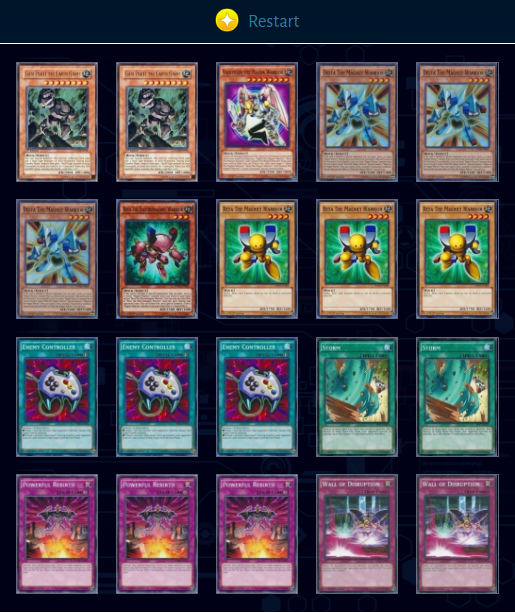

Magnet Warriors is an archetype that focuses on milling your rock monsters to the graveyard with the use of Delta the Magnet Warrior and Beta the Electromagnet Warrior.
By doing so, you set-up your special summons and quickly draw into your big plays. With the recent release of That Grass Looks Greener, a 30 card Magnet Warriors deck has taken advantage of its use. Alongside Triamid Pulse, the 30 card Grass Magnets deck has taken many by surprise.
With the milling capabilities of the Magnet Warrior engine combined with That Grass Looks Greener, Triamid Pulse uses those rock monsters in the graveyard to banish them to activate one of its many effects.
That being said, with the easy special summon capabilities of Gaia Plate the Earth Giant and Valkyrion the Magna Warrior, this deck can easily defeat your opponent in one turn or disrupt their entire field.
